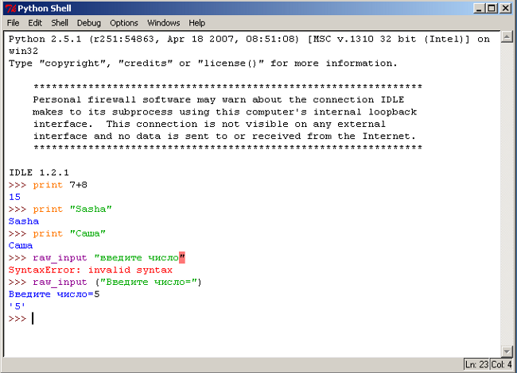
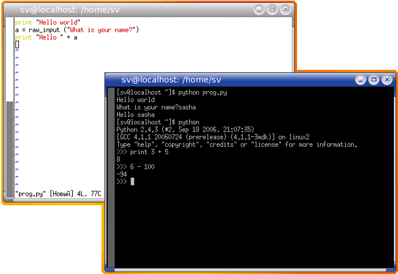
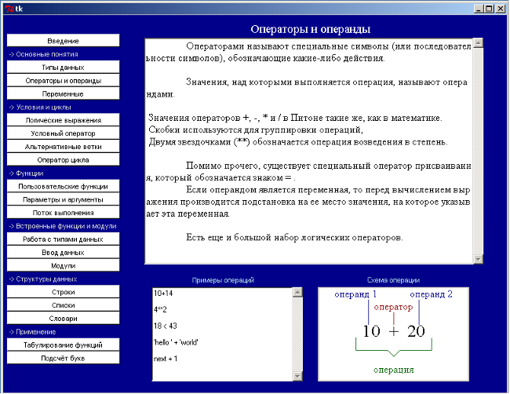

Описание
Python является простым и, в то же время, мощным интерпретируемым объектно-ориентированным языком программирования. Он предоставляет структуры данных высокого уровня, имеет изящный синтаксис и использует динамический контроль типов, что делает его идеальным языком для быстрого написания различных приложений на большинстве распространенных платформ.
Python в настоящее время является бурно развивающимся и популярным сценарным языком программирования.
Благодаря ясному синтаксису изучение языка не составляет большой проблемы. Написанные на нем программы получаются структурированными по форме, и в них легко проследить логику работы.
Python имеет богатую стандартную библиотеку и большое количество модулей расширения практически для всех нужд отрасли информационных технологий.
Возможность диалогового режима работы интерпретатора Python позволяет существенно сократить время изучения самого языка и перейти к решению задач в соответствующих предметных областях.
Python является свободным - все исходные тексты интерпретатора и библиотек доступны для любого, включая коммерческое, использования.
История
Создание Python, было начато Гвидо Ван Россумом (Guido van Rossum) в 1991 году, когда он работал над распределенной ОС Амеба. Ему требовался расширяемый язык, который бы обеспечил поддержку системных вызовов. За основу были взяты ABC и Модула-3. В качестве названия он выбрал python в честь комедийных серий BBC «Летающий цирк Монти-Питона», а вовсе не по названию змеи. С тех пор Python развивался при поддержке организаций, в которых Гвидо работал. Особенно активно язык совершенствуется в настоящее время, когда над ним работает не только команда создателей, но и целое сообщество программистов со всего мира.
Поддерживаемые парадигмы
Python поддерживает несколько парадигм программирования: императивное (процедурный, структурный, модульный подходы), объектно-ориентированное программирование, функциональное программирование, событийно-управляемые программы (GUI-приложения), форматы представления данных (Unicode, XML и т.п.).
Области применения
Как и большинство языков программирования Python имеет свои преимущества и недостатки, а так же сферы применения. В поставку Python обширная стандартная библиотека для решения широкого круга задач. В Интернете доступны качественные библиотеки для Python по различным предметным областям: средства обработки текстов и технологии Интернет, обработка изображений, инструменты для создания приложений, механизмы доступа к базам данных, пакеты для научных вычислений, библиотеки построения графического интерфейса и т.п. Кроме того, Python имеет простые средства для интеграции с языками C, C++ и Java как путем встраивания (embedding) интерпретатора в программы на этих языках, так и наоборот, посредством использования библиотек, написанных на этих языках, в Python-программах.
Python и приложения, написанные на нём, используют самые известные и крупные фирмы – IBM, Yahoo!, Godle.com, NASA, Red Hat и др. Python используют и в России. Многие компании используют его для внутренних нужд; на этом языке пишутся утилиты, фильтры, резидентные программы, GUI и Web-сайты.
Многоплатформенность
Неважно, какая операционная система установлена у вас на компьютере - Питон имеет реализации под все самые распространенные платформы: Windows, UNIX (GNU/Linux, FreeBSD и др.) и даже для Mac OS. Более того, программы написанные в одной операционной системе, будут успешно выполняться в любой другой при наличии установленного интерпретатора Питона!
Интерпретатор языка Питон распространяется свободно на основании лицензии Python Software Foundation (PSF) Licence (http://www.python.org/psf/license/), которая, в некотором роде, даже более делмкратична, чем GNU CPL (GNU General Public Licence: http://gnu.org/copyleft/). Официальный сайт проекта языка Питона располагается по адресу http://python.org/. Здесь же в разделе «Downloads» можно скачать свежую версию для любой операционной системы.
Среда разработки
В стандартный комплект поставки Питона входит интегрирования среда разработки IDLE, в которой редактировать программы будет намного удобнее, чем в простом текстовом редакторе. IDLE написан на Питоне с использованием платформонезависимой библиотеки Tcl, поэтому легко запускается в любой операционной системе, для которой существует реализация Питона. IDLE также имеет встроенную систему отладки, позволяющую запускать программу построчно, что облегчает процесс поиска ошибок.

Кроме того, в UNIX-системах есть множество редакторов, имеющих свои достоинства, как консольные (vi, emacs, встроенный редактор mc), так и графические (vim, emacs, kate и другие).

Способы использования интерпретатора
Существует два способа использования интерпретатора: командный режим и режим выполнения файлов.
Если в командной строке интерпретатора Питона вы наберете команду, то интерпретатор тут же выведет результат ее выполнения:
>>>print "Hello world!" Hello world!
Мы также можем записать программу в файл и использовать интерпретатор для того, чтобы ее выполнить. Такой файл называют сценарием или скриптом (от англ. Script-сценарий). Например, используя текстовый редактор, можно создать файл prog1.py со следующим содержанием:
print "Hello world!"
Названия файлов, содержащих программы на Питоне, приятно завершать последовательностью символов .py (те, кто работают в операционных системах DOS или Windows, называют это расширением). Для того чтобы выполнить программу, необходимо предать интерпретатору в качестве параметра название скрипта:
$ python prog1.py 'Hello world!'
Строить графический интерфейс пользователя (GUI, Graphical User Interface) для программ на языке Python можно при помощи соответствующих библиотек компонентов графического интерфейса. Самым распространённой пакетом является Tkinter.
Почти все современные графические интерфейсы общего назначения строятся по модели WIMP - Window, Icon, Menu, Pointer (окно, иконка, меню, указатель). Внутри окон рисуются элементы графического интерфейса, которые для краткости называются виджетами (widget - штучка). Меню могут располагаться в различных частях окна, но их поведение достаточно однотипно: они служат для выбора действия из набора предопределенных действий. Пользователь графического интерфейса "объясняет" компьютерной программе требуемые действия с помощью указателя. Обычно указателем служит курсор мыши или джойстика, однако есть и другие "указательные" устройства. С помощью иконок графический интерфейс приобретает независимость от языка и в некоторых случаях позволяет быстрее ориентироваться в интерфейсе.
Основной задачей графического интерфейса является упрощение коммуникации между пользователем и компьютером. Об этом следует постоянно помнить при проектировании интерфейса. Применение имеющихся в наличии у программиста (или дизайнера) средств при создании графического интерфейса нужно свести до минимума, выбирая наиболее удобные пользователю виджеты в каждом конкретном случае. Кроме того, полезно следовать принципу наименьшего удивления: из формы интерфейса должно быть понятно его поведение. Плохо продуманный интерфейс портит ощущения пользователя от программы, даже если за фасадом интерфейса скрывается эффективный алгоритм. Интерфейс должен быть удобен для типичных действий пользователя. [2]
В связи с этим был разработан удобный интерфейс для учебника, который логично разделён на две части: меню, где осуществляется выбор того или иного раздела учебника и область для чтения, где отображается содержание разделов учебника, коды программ и изображения. В принципе, это стандартная система организации многих электронных учебников.
Основная черта любой программы с графическим интерфейсом - интерактивность. Программа не просто что-то считает (в пакетном режиме) от начала своего запуска до конца: ее действия зависят от вмешательства пользователя. Фактически, графическое приложение выполняет бесконечный цикл обработки событий. Программа, реализующая графический интерфейс, событийно-ориентирована. Она ждет от интерфейса событий, которые и обрабатывает сообразно своему внутреннему состоянию.
Эти события возникают в элементах графического интерфейса (виджетах) и обрабатываются прикрепленными к этим виджетам обработчиками. Сами виджеты имеют многочисленные свойства (цвет, размер, расположение), выстраиваются в иерархию принадлежности (один виджет может быть хозяином другого), имеют методы для доступа к своему состоянию.
Для связи между виджетами в Tk используются переменные, через которые виджеты и передают друг другу параметры. [2]
В нашем учебнике были использованы следующие виджеты:
Кроме виджет из Tkinter, нами был использован виджет ScrolledText из одноименного модуля Python. Этот виджет аналогичен рамке с текстом и вертикальной полосой прокрутки. Это позволило нам упростить создание текстового поля с прокруткой, которое было необходимо для расширения функциональности учебника.
Разработка интерфейса с помощью Tkinter относится к невизуальному программированию. Поэтому много внимания приходится уделять менеджерам расположения. Виджет устанавливается на место по правилам того или иного менеджера расположения. В Tkinter есть три менеджера расположения: pack (простой упаковщик), place (произвольное расположение) и grid (сетка). Нами было использованы методы pack и place.
Разработанный нами краткий электронный учебник по языку программирования Python включает следующие разделы:
Введение
Основные понятия
Типы данных
Операторы и операнды
Переменные
Условия и циклы
Логические выражения
Условный оператор
Альтернативные ветки
Оператор цикла
Функции
Пользовательские функции
Параметры и аргументы
Поток выполнения
Встроенные функции и модули
Работа с типами данных
Ввод данных
Модули
Структуры данных
Строки
Списки
Словари
Применение
Табулирование функций
Подсчет букв
Данные разделы коснулись основных понятий и принципов программирования в общем и языка Python в частности. Например, в разделе «Основные понятия» были затронуты такие понятия как различные типы данных (число, строка и др.), понятие переменной, что характерно для любого языка программирования. А уже в разделе структуры данных рассматриваются специфические для Python типы данных - последовательности и словари. Поскольку Python модульный язык было удаленно внимание различным модулям.
Для многих разделов учебника были созданы изображения (блок-схемы циклов, условий и др.). Они запрограммированны с помощью свойств и методов объекта Canvas.
В приложении 3 представлен внешний вид электронного учебника.
